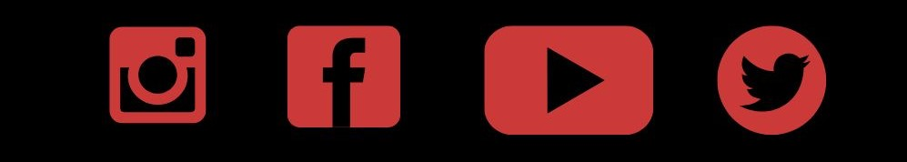

Antirežimske studentske blokade u Srbiji
U Srbiji su u toku blokade na više od 30 državnih fakulteta, uključujući fakultete na sveučilištu u Nišu, Beogradu i Novom Sadu. Studenti su započeli ove aktivnosti kao odgovor na društvene tenzije, zahtevajući veću odgovornost i solidarnost institucija povodom nedavnih incidenata, kao i solidarnost sa napadnutim kolegama i profesorima tokom komemorativnih okupljanja. Ciljevi blokada uključuju očuvanje autonomije univerziteta i prava studenata, kao i javnu podršku akademske zajednice. Protesti se odvijaju kroz plenume, debate i radne grupe koje se bave organizacijom, uključujući komunikaciju sa upravama fakulteta i studentima sa drugih fakulteta. Iako su neki dekani izrazili neslaganje sa blokadama, studenti insistiraju da uprave podrže njihove zahteve. Aktivnosti se šire na sve više univerziteta, uz stalne pozive na dijalog između studenata i administracije. Ovakve akcije uključuju i edukativne aktivnosti, kao što su predavanja i diskusije, koje studenti organizuju kako bi se osnažila njihova inicijativa. Istovremeno, oni nastoje da zadrže miran ton protesta i izbegnu politizaciju svojih zahteva.
Ove blokade nisu usmjerene samo na traženje pravde za žrtve poginule padom nadstrešnice ispred novosadskog kolodvora, već i na širu kritiku političkog sustava, s naglaskom na dugotrajan politički monopol koji traje već tri desetljeća. Studenti ističu da isti političari koji su na vlasti već dugi niz godina ne snose odgovornost za neadekvatno upravljanje i korupciju koja se proširila kroz državne institucije. Studenti zahtijevaju političku "čistku" kako bi se omogućila stvarna promjena u vođenju države, a ne samo kozmetičke promjene koje ne adresiraju duboke probleme. Kroz blokade, oni žele poslati jasnu poruku da ne pristaju na ignoriranje odgovornosti i da žele aktivnu ulogu u kreiranju budućnosti koja ne uključuje koruptivne prakse. Ove akcije, iako politički osjetljive, fokusirane su na traženje pravde za tragičan događaj i smanjenje političkog utjecaja koji je, prema njihovim riječima, odgovoran za sistemsku stagnaciju. Protesti i blokade traju dok se ne ispune njihovi zahtjevi, a studenti nastavljaju tražiti podršku akademske zajednice i šire javnosti u borbi za odgovornost i promjene u političkom sustavu.
Navedene studentske blokade dobijaju podršku studenata sa raznih europskih sveučilišta. Među njima se izdvaja i Studentski zbor Sveučilišta u Zagrebu, koji je izrazio solidarnost sa srpskim studentima u njihovoj borbi za pravdu i odgovornost. Ova međunarodna podrška ukazuje na šire razumijevanje problema, ne samo u Srbiji, već i na globalnoj akademskoj sceni, gdje se ističe važnost odgovornosti vlasti i političke promjene u zemlji.
Izjava jednog od privedenih studenata u Novom Sadu:
Izjava profesora Fakulteta tehničkih nauka u Novom Sadu:
Praćenje dešavanja vezanih uz studentske blokade postalo je izazovno zbog nedostatka dosljednog izvještavanja na nacionalnim medijima. S obzirom na to, aktivisti pozivaju sve zainteresirane da prate aktivnosti studenata putem društvenih mreža i drugih provjerenih informativnih portala. Na taj način, građani mogu dobiti pravovremene i točne informacije o trenutnim događajima, direktno od samih studenata, bez potrebe za oslanjanjem na tradicionalne medijske izvore:
